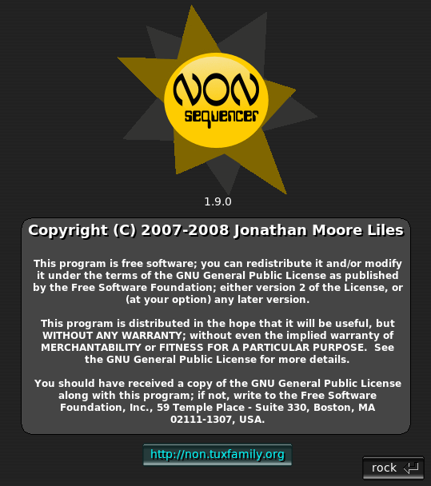
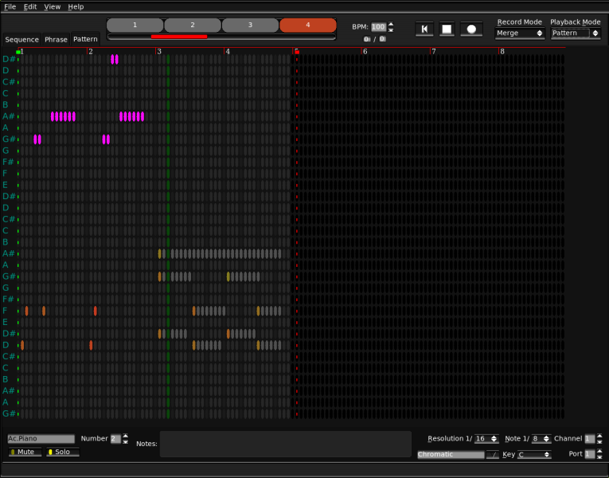
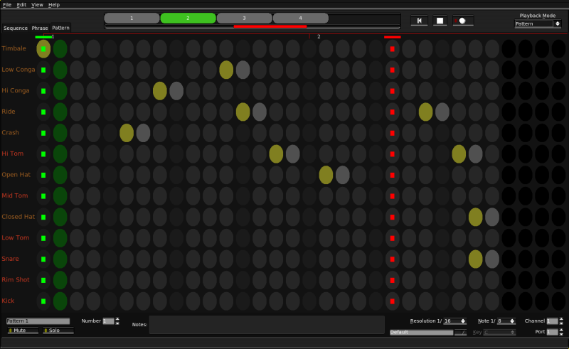
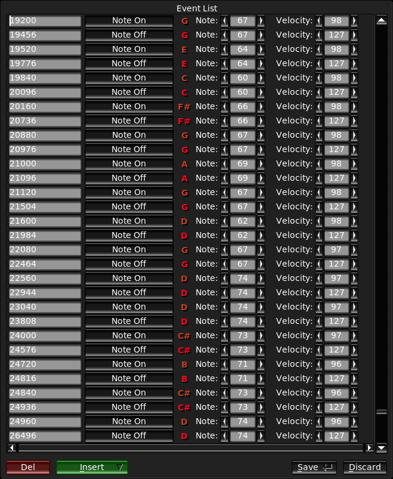
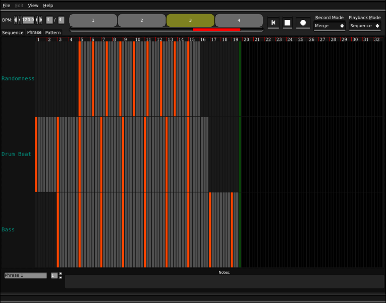
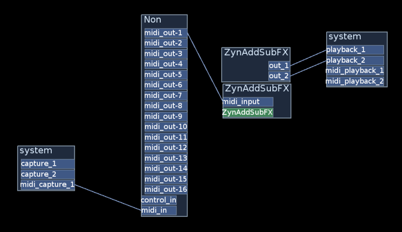

Table Of Contents
- 1. Description
- 2. The Interface
- 3. MIDI
- 4. Synchronization
- 5. Control
- 6. Playback
- 7. Sister Projects
1. Description
|  |
1.1. Guiding Principles
- Flexibility
- Efficiency
- Purpose
- Grace
Non has many modes and functions. Where flexibility comes at a small cost, we prefer to be flexible and make up the difference elsewhere. Where arbitrary limitations are reasonable and necessary, Non enforces them, but not without being forced into it. Where it is easier to be inefficient than efficient, but the efficiency matters, we prefer to put in the (small amount of) work required to be efficient, often resulting in thousand-fold performance gains; this may sound like an obvious statement, but, in fact, design for efficiency is a rare practice in this (Linux Audio'Modern' software arena. Although it is tempting to implement a kitchen sink in every program, we resist the urge. Non has the purpose of being a real-time sequencer and anything outside of that scope is a job for another day. If there is something related to the task at hand that a computer can do instantly and easily, but which requires labor for you, Non tries to do it for you so that you can continue making music without being bothered. Non's user interface is designed to combine the stark functionality and speed of hardware with the degrees of freedom of software.
2. The Interface
The interface is quite simple and is based on the excellent FLTK (1.1.x) toolkit. (Versions < 1 of Non were based on raw Xlib and a few Motif widgets.) The author examined many toolkits before beginning, and has absolutely no interest in pursuing GTK or Qt--Non simply doesn't require much of a toolkit, and these are incapable of providing less than total excess.
Non's GUI is highly optimized. Common operations are designed to be as fast as possible. Where other sequencers completely monopolize the CPU when scrolling, etc., Non performs smoothly--even on antiquated hardware. It is not technically difficult to achieve such speed. And, in fact, it is a shame that more developers don't consider good (or even just reasonable) performance a priority.
2.1. The Pattern Editor
|  |
Upon invocation, Non enters the pattern editor and loads Pattern 1. The pattern editor presents a grid interface--the heart of a step sequencer. You can toggle a note on the grid by entering its coordinates with the keyboard or clicking an intersection with the mouse. The length of patterns is unlimited and no special action is required to lengthen them (simply adding notes beyond the "end" is enough.) Non can present grids in one of two modes, expanded and compacted. In the compacted view, only named rows are displayed; this means that only the notes the current instrument or scale will consume vertical space--resulting in far more efficient use of screen real-estate. Any notes that are made invisible by the compacted view will be silenced.
The resolution of the pattern display can be adjusted (the default is one point per 1/16th note), and, additionally, the canvas can be zoomed horizontally and vertically as necessary. However, it is highly recommended that you avoid creating 'vertical' compositions, that is, one should place each part in a separate pattern and avoid the need to scroll about looking for notes.
Tonic patterns have a choice of scale and key, which limits the display to only valid notes. This row-compaction can be turned off, if desired, so that all 128 notes are visible. Or simply choose the chromatic mapping if you are not creating scale based music.
Percussion, or other sample-based patterns can be assigned an instrument mapping, which again limits the display to only those notes for which names and volumes have been provided. The instrument definition format is a simple ASCII file containing one name, note and volume percentage per line.
Individual patterns may be soloed or muted right from the pattern editor.
Each pattern has a setting for output MIDI channel and sequencer port--and these may also be changed while the transport is running.
2.1.1. The Notes
The type (duration) of note to be inserted can be adjusted in the pattern editor (control+mouse-wheel). The velocity of individual notes may be adjusted (mouse-wheel), and the current value is reflected in the color of the note. Ranges may also be inserted and deleted, a commonly required operation during composition, but one that is, sadly, missing from many sequencers.
|  |
2.1.2. Recording
A pattern can be recorded via MIDI in one of four modes:
- Merge (the most familiar/least useful)
- In this mode recorded events are merged into the pattern on each pass through the loop. This is how most sequencers work, but it usually just results in a jumble of notes that require much manual cleaning up.
- Overwrite (each pass [with input] replaces the previous contents of the pattern)
- This is like merge mode, except that the pattern is cleared before the recorded events are input. If no notes have been played during a loop, the pattern remains unchanged. This is a great way to just get a part down without having to remove your hands from the instrument.
- Layer (each pass [with input] goes into a new pattern)
- This is just like overwrite mode, except that the pattern actually overwritten is a duplicate. Use this mode to record several loops of the same length without removing your hands from the instrument.
- New
- In this mode, all recorded events are placed into a new pattern (of whatever length) when recording is stopped.
2.1.3. The Event Editor
|  |
For situations requiring close inspection, fine-adjustments or entering of non-note data, the Event Editor allows one to edit the raw MIDI event list of a pattern. A common use is to insert program or control change events.
Like everything else in Non, the Event Editor is real-time--change a note and you'll see and hear the result as the pattern plays.
2.2. The Phrase Editor
|  |
Phrases are to patterns as patterns are to notes. Switching to the Phrase Editor brings up Phrase 1, where each row corresponds to an existing pattern. The grid of the Phrase Editor is fixed at one column-per-beat. This view is somewhat similar to a timeline view in other sequencers, but do not be deceived--Phrases may be many in number and are triggered just like patterns.
When a node on the Phrase Editor grid is activated, the length of the cue event inserted will be the same as that of the pattern being triggered. Adjusting the duration of this event will cause the pattern be cut short or looped. If the length of a referenced pattern is changed, this will not be reflected in the Phrase display. You must either re-insert or adjust the length of the reference.
It is recommended that, to avoid confusion, you first compose all of the patterns you need for a phrase, and only then bring up the phrase editor.
Editing operations are the same as those for the Pattern Editor.
2.3. The Sequence Editor
The Sequence Editor defines the sequence of playback. The interface is a list of phrases, to be played sequentially, beginning from bar 1. It is not necessary to include all existing phrases in the playlist. Phrases can be moved up and down the playlist, inserted and deleted. The editor displays the start bar of each phrase in addition to its number and name.
This sequence->phrase->pattern hierarchy allows for logical, expressive compositions--without the labor intensive copypasteduplicate work-flow imposed by other sequencers.
For example, suppose you have a song with a 12 bar progression that repeats 4 times. This 12 bar sequence is composed of many patterns, each a few measures in length and roughly corresponding to the chords in the progression.
In another sequencer you would be required to use clumsy copy/paste operations to destructively extend the 12 bar sequence. Then if you wanted to change a part of that subsequence later, you would have to go edit each instance of it on the 'timeline' view. This is absurdly inefficient for the operator.
In Non you simply create your patterns, assemble them into logical phrases, and then assemble these phrases into a sequence that determines the entire song. This approach is similar to the bottom-up approach of factored languages such as Forth.
2.4. Pattern Triggers
 |
Next to the sequence playlist is an array of pattern triggers. Here one can monitor the progress of multiple patterns during playback and cause them to be muted etc.
The left mouse button toggles muting, the middle button toggles soloing, and the right button brings up the given pattern in the pattern editor.
Playing patterns appear green, the solo pattern appears red, and muted patterns appear gray,
3. MIDI
3.1. IO
Non utilizes the Jack MIDI transport. Jack MIDI is an emerging MIDI transport for Linux. Since Jack already provides similar routing as the ALSA Sequencer interface, little is lost--besides compatibility with existing programs. (Jack has an aseq bridge capability, but in order to benefit from Jack MIDI, both sequencer and synth must use Jack). The Jack MIDI API is extremely limited in comparison to the very capable ALSA API, but this is a problem for the programmer, not the user.
At the time of writing, Non is one of only two sequencers to use Jack MIDI natively.
3.1.1. About Jack MIDI Connections
Since Jack MIDI is new and not all programs support it, many find themselves confused. This section attempts to explain Jack MIDI ports.
The ALSA sequencer interface has long been the standard MIDI routing subsystem on Linux. But many (all) of the programs we use for synthesis these days use Jack for their audio IO. It makes more sense for those MIDI related programs utilizing the Jack Transport for synchronization to also use Jack ports for MIDI delivery. Therefore, ALSA MIDI is quickly becoming obsolete.
Jack MIDI ports are not related to ALSA MIDI ports in any way. Jack MIDI ports are just like Jack audio ports, except that the data being transmitted in each buffer are raw, timestamped MIDI events instead of floating point audio samples. Jack MIDI is sample-accurate. This means that a MIDI Note On event can occur concurrently with a sound, and the two will never drift apart as often happens to some extent with ALSA.
In essence, Jack MIDI is a way of expressing a direct temporal correlation between audio and MIDI data.
| Note: | Older versions of QJackCtl and other connection managers do not know about Jack MIDI ports. Please make sure you're using an up-to-date version. |
For example, to connect Non to ZynAddSubFX (the CVS version supports Jack MIDI), type the following into the shell:
$ jack_connect Non:midi_out-1 ZynAddSubFX:midi_in |
Also, be sure that Zyn's outputs are connected to system:playback_* so that you can hear the sounds it produces.
It is possible to use Jack MIDI clients and ALSA MIDI clients together via the bridge built into jackd. For this to work you must append the -X seq option to the alsa driver section of the jackd command line. Like so:
$ jackd -d alsa -X seq |
The way such bridged ports are named varies between Jack versions, but they should be fairly obvious. When used in this way, many of the advantages of Jack MIDI are lost, so it is recommended that you find a Jack MIDI capable synth for best results.
|  |
3.2. Non Files
The format of .non files is a variation of SMF-2. In an SMF-2 file, each track chunk represents a pattern. Because Non groups patterns into phrases, this usage of SMF-2 is probably not compatible with other implementations (although, the author has never actually seen another program that could play back SMF-2 anyway.)
Each phrase is stored as a track of MIDI Cue messages, each referring to a pattern to be triggered. The sequence/playlist is stored as the first track, and consists of a list of Cue Point meta-events referring to phrases.
Also in the first track is a sequencer specific meta-event (ID "Non!") containing song data that cannot be readily expressed with existing meta events, and some versioning info to aid future compatibility.
In short, the author has done the utmost to save sequences in a standard format--within reason; SMF was hardly designed with a program like Non in mind--instead of some ad-hoc ASCII format (which would have been far easier to implement), or worse, buggy, bulky, and unmaintainable XML.
3.3. Exports
In addition to saving and loading .non files, Non can export individual patterns as flat, SMF-0 MIDI files.
3.4. Imports
SMF-0 files can be imported as a new pattern (all channels merged), or SMF-1 (such as those written by Seq24) and SMF-2 (ever seen one of these?) can be imported as N new patterns (selected from a track list.) All imported patterns are set to display the Chromatic scale, in order that no notes be hidden from view.
This should make it easy to migrate any existing patterns that you may have over to Non, or to permit editing of Non patterns in external programs (for graphic controller tweaking perhaps?)
4. Synchronization
Non's transport is driven by the Jack Transport, so in order to sync Non with a DAW like Ardour, you must set Ardour to be the Jack Timebase Master. Therefore, all tempo mapping and time signature information should be manipulated in the Timebase Master--Non will respond to these changes automatically. If there is no Timebase Master registered when Non starts, it will take over that role instead. This is useful if you simply plan to use Non as a musical instrument.
5. Control
Non creates two MIDI input ports, one for performance data and one for control data. The control port is used to control Non with hardware MIDI controllers, such as the BCF2000, or other software. The performance port is used to record musical data into patterns.
6. Playback
The playback mode can be toggled between Pattern, Sequence and Trigger. In Pattern mode (the default), all patterns are played simultaneously, from the beginning, and looped forever. Since patterns may differ widely in length, interesting compositions are possible. In this mode, Non makes for a very intuitive software instrument--rivaled only by the excellent program FreeWheeling (a live audio looper.)
In Sequence mode, playback strictly follows the sequence list and the Jack transport, and does not loop. This mode is suitable for parallel compositions between Non and a Jack Timebase Master capable DAW.
Trigger mode is very much like Pattern mode, except that all patterns begin muted and must be enabled via the trigger view.
7. Sister Projects
Much of the inspiration to move forward with Non was derived from JP Mercury's highly useful and successful FreeWheeling looper. Mr. Mercury is a visionary.
But the closest sister of Non has to be the amazingly capable ZynAddSubFX soft-synth by Nasca Octavian Paul. ZynAddSubFX, like Non, utilizes the FLTK GUI toolkit, and has recently begun to support Jack MIDI (albeit in a limited fashion.) This is, hands down, the best synth available for Linux, and probably one of the best period. If all you have is Non and Zyn, you have all that you require to make great music.
Of course, this section can hardly go without mention of Rob Buse's Seq24. It was the author's unending frustration with the abysmal performance and absurd limitations of Seq24 that, more than any other single factor, inspired him to write Non. The most frustrating aspect was that, prior to Non, Seq24 was, in the author's opinion, the best sequencer available on Linux. Seq24, which claims to be light and free of bloat is, without comparison, the slowest, most poorly optimized sequencer the author has tried. Even the huge, snarling beast that is RoseGarden out performs Seq24 in every way but start time.
Those days are over.